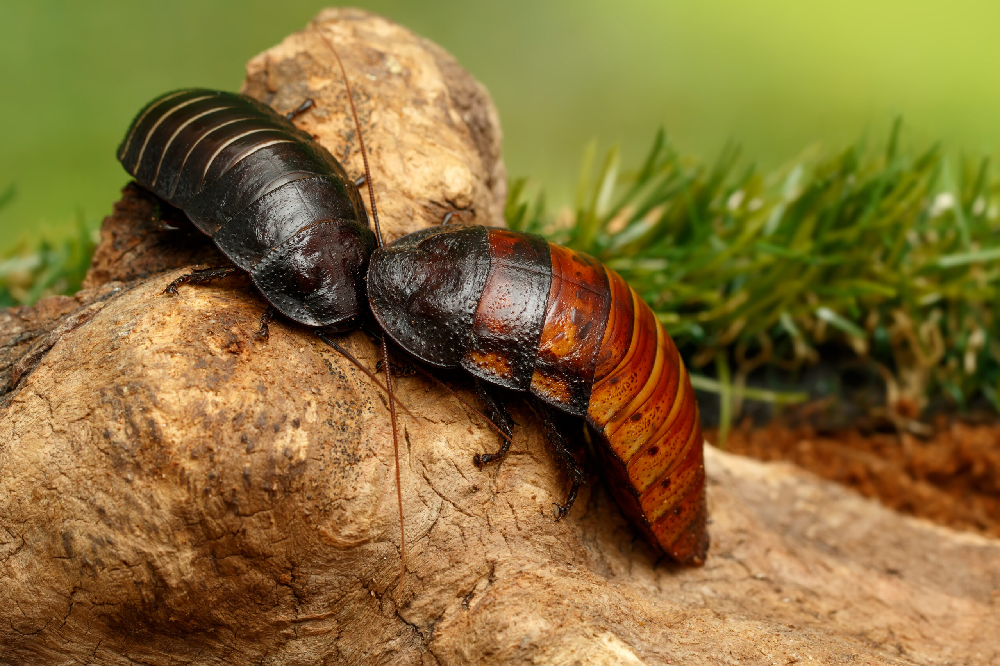

Home
Home Ants
Ants Bees
Bees Beetles
Beetles Butterflies
Butterflies Cockroaches
Cockroaches Flies
Flies Mosquitoes
Mosquitoes Spiders
Spiders Newsletter
NewsletterCockroaches
Description
There are striking differences between the male and female Madagascar hissing cockroaches. Males possess large horns on the pronutum (behind the head), while females have only small 'bumps'. The presence or absence of the pronotal horns allows easy identification of the sexes. The antennae of males are hairy while the antennae of females are relatively smooth. Finally, the behavior of males and females also differ: only males are aggressive. The life cycle of the Madagascar hissing cockroach is long and differs some from most other cockroaches. Females are ovoviparous, that is, they give birth to live young. The female carries the egg and neonate nymphs for approximately 60 days until they emerge as first instar nymphs. One female can produce as many as 30-60 nymphs. This insect has an incomplete life cycle: egg, nymphs and adult stage. The nymphs undergo 6 molts before reaching maturity in 7 months. The nymphs and adults are wingless and can live for 2 to 5 years.
Range
These large, wingless cockroaches are from Madagascar, an island off the coast of Africa.
Diet
Little is known about its ecology, but this insect probably lives on the forest floor in rotten logs and feeds on fallen fruit.
Behavior
The aggressive encounters between males are quite impressive. Males ram into each other with their horns and/or they push each other with their abdomens. Larger males usually win. Hissing plays an important role during male-male inter- actions. Winners of encounters hiss more than losers. The hisses of males also contain information about the size of the male hissing and may be used to assess the opponent's size. Males can also discriminate among the hisses of familiar males and strangers. These hisses are audible and can be heard by observers. Although this species is primarily nocturnal, you can see males fighting during the day.

Conservation
Madagascar hissing cockroaches are listed as Least Concern and are not currently threatened, but they face habitat risks from deforestation. They play a crucial role as decomposers in their native forest habitat, and while widespread, their localized populations are threatened by habitat degradation.
Fun Fact
While many insects use sound, the Madagascar hissing cockroach has a unique way of producing its hisses. In this insect, sound is produced by forcibly expelling air through a pair of modified abdominal spiracles. Spiracles are breathing pores which are part of the respiratory system of insects. Because the spiracles are involved in respiration, this method of sound production is more typical of the respiratory sound made by the vertebrates. In contrast, most other insects produce sound by rubbing body parts (e.g. crickets) or vibrating a membrane (e.g. cicadas).